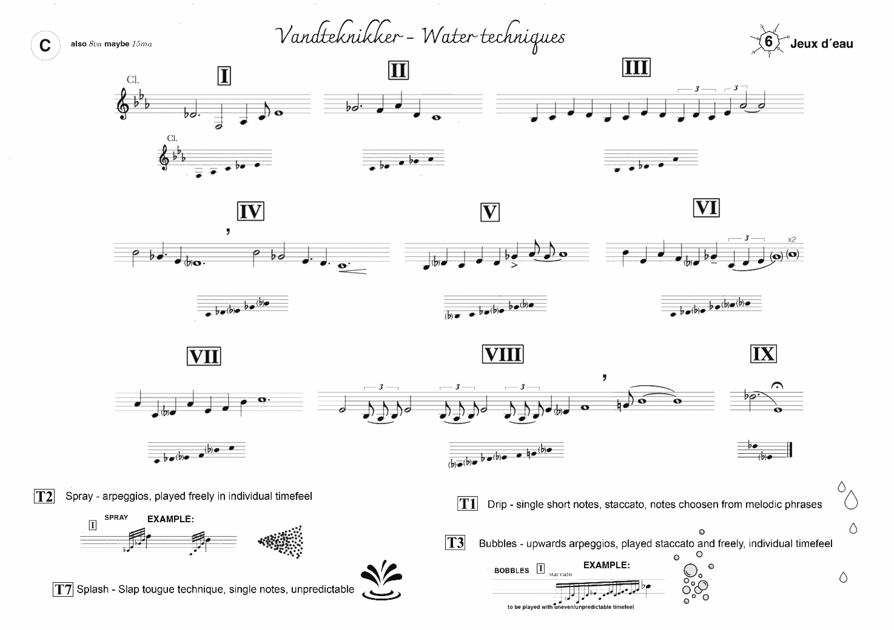

JEUX D'EAU · 2025
“Jeux d’eau” is a collaboration between composer Anders Lauge Meldgaard and Copenhagen Clarinet Choir. Meldgaard participates as both composer and instrumentalist in the work, playing the New Ondomo – a modern Japanese version of the early French electronic musical instrument, Ondes Martenot. “Jeux d’Eau” emerged during Meldgaard’s visit to the gardens of Villa d’Este in Tivoli, Italy. The fountains in these gardens had previously inspired composers Franz Liszt and Maurice Ravel to write piano pieces titled Jeux d’Eau. Meldgaard uses motifs from these works as a starting point to create a new score for the clarinet choir, exploring the uncharted territory where the acoustic sound of the clarinet sextet meets the electronic sounds of New Ondomo, synthesizers, and samplers.
On FEB 7th 2024, innovative ensemble Copenhagen Clarinet Choir and composer Anders Lauge Meldgaard present the premiere of “Jeux d’Eau” – a warm and pulsating work for six clarinets, electronics, and the Japanese instrument new Ondomo, written by Meldgaard with inspiration from babbling Italian fountains and nods to Franz Liszt and Maurice Ravel. The concert is part of Vinterjazz. The concert is seated. Anders Lauge Meldgaard and Copenhagen Clarinet Choir present the premiere of “Jeux d’Eau” at ALICE during Vinterjazz.
Led by Irish woodwind player Carolyn Goodwin, Copenhagen Clarinet Choir creates multi-colored sonic plateaus through improvisation based on open scores. The sextet works with an egalitarian approach to music; mutually dependent on each other, they find an overall form that is as harmonious as a living organism. Like a choir, the individual voices of the six clarinets are synergized, creating a warm and pulsating sound. The result is a deep symbiotic resonance sculpted by the nuances of the clarinet. Their debut album, “Organism,” was released on the award-winning År & Dag label in September 2022. At ALICE, Copenhagen Clarinet Choir and Anders Lauge Meldgaard perform a premiere of the work, an experience not to be missed.
Composer and multi-instrumentalist Anders Lauge Meldgaard works in a broad range of musical expressions, from contemporary composition music to free improvisation, sound installations, electronic music, orchestral collage songwriting, eclectic mixtapes, noisy works for electric guitar sextet, and electronic music. The tension between composition and improvisation is often used as a motivating force behind his musical adventures. His musical universe has been exhibited and performed nationally and internationally, including at events such as Novas Frequências (Rio de Janeiro), SuperDeluxe (Tokyo), The Living Art Museum (Reykjavik), Cafe Oto (London), Grimm Museum (Berlin), Muziekgebouw (Amsterdam), By:Larm (Oslo), Inkonst (Malmö), Roskilde Festival, and Click Festival, as well as on tours in Europe, the USA, and Asia. He is a founding member of the record label and experimental music and composition collective År & Dag.
